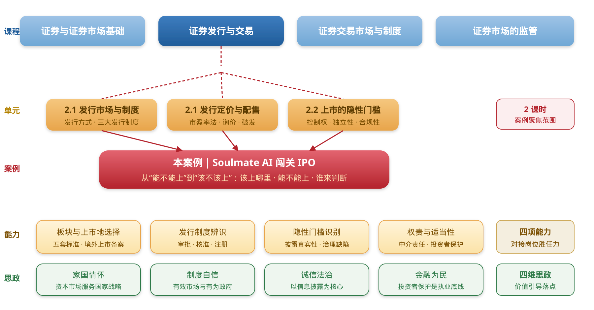
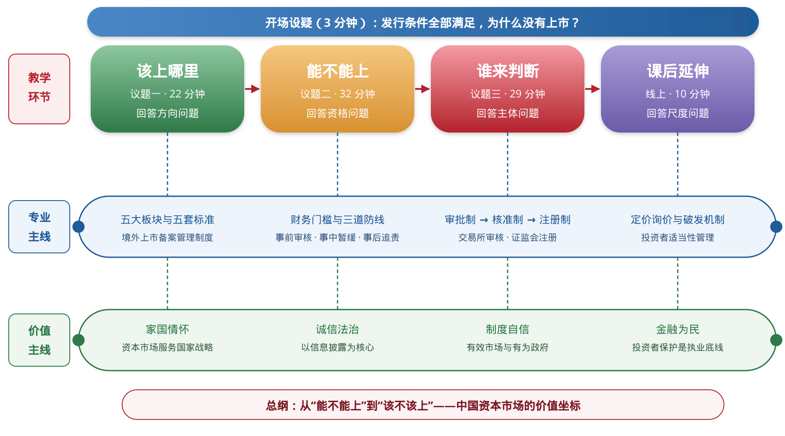
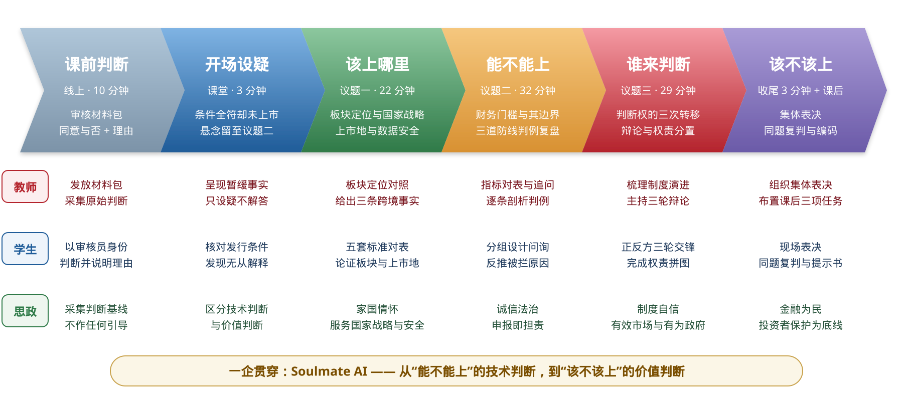

本教学案例依托《证券投资学》第二章“证券发行与交易”中股票发行与上市的核心内容设计，覆盖 2.1 发行市场与制度、2.2 上市的隐性门槛两个连续单元，课堂教学 2 课时，另配课前、课后两段线上任务。案例以虚拟创业公司 Soulmate AI（人工智能情感陪伴应用，完成五轮融资，尚未盈利）的 IPO 闯关之路为主线，把板块与上市地选择、发行上市条件、审核与注册程序、权责配置、发行定价与投资者适当性等分散内容，整合为“该上哪里、能不能上、谁来判断”三个递进的问题，并结合我国全面注册制改革的时代背景，搭建专业知识、实践判例与价值引领相贯通的教学体系。
股票发行上市是资本市场的基础性制度安排，也是连接实体经济与金融市场的关键环节，学生对此的理解直接影响其对资本市场功能、企业治理和社会责任的认知。近年来，我国资本市场完成了从审批制、核准制到全面注册制的制度跃迁，以信息披露为核心的监管理念随之确立：“申报即担责”成为可执行的法律约束，准入标准从财务数字扩展到国家战略与金融安全，追责机制延伸至公众索赔，上市地选择上升为国家安全议题。制度变迁对从业者的专业素养和职业道德提出了更高要求，而本专业毕业生大量进入保荐、审计、法律、投研与合规岗位，他们将来签下的每一个名字，都会落在普通投资者的投资判断上。
然而，学生在学习过程中往往存在以下问题：一是对 IPO 的理解停留在“圈钱”或“造富”的表层认知，把上市门槛等同于净利润、营业收入与市值一组数字，缺乏对资本市场功能和企业社会责任的深度理解；二是在分析企业上市可行性时，容易忽视控制权稳定性、商业道德、板块定位与产业导向等非财务门槛，价值判断模糊，也解释不了条件齐备的企业为何仍上不了市；三是实践应用能力不足，比较境内外市场时只权衡估值水平、发行成本与流动性，在中外制度比较中容易预设先进与落后，难以将专业知识与真实案例、监管要求相结合，缺乏“资本市场看门人”的责任意识。
本案例以问题为导向，通过创设真实的发行审核情境，让学生以发行审核人员与证券从业者的双重身份完成一次完整判断：课前先判断一次并写明理由，课堂依次讨论该上哪里、能不能上、谁来判断，收尾进行集体表决，课后就同一份材料再判断一次。案例不另设思政环节，价值引导内生于专业判断；学生在模拟企业上市闯关的过程中系统掌握专业知识，同时直面价值判断与职业选择，实现知识传授、能力培养与价值引领的有机统一。

本案例把两节相邻单元合并处理，按业务逻辑而非教材顺序重新组织。全部内容围绕 Soulmate AI 的上市决策展开，形成三个课堂议题与两段线上任务：课前完成一次发行审核判断，课堂依次讨论该上哪里、能不能上、谁来判断，收尾进行一次集体表决，课后就同一份材料再判断一次。
四类素材交替使用：法条给出边界，判例提供事实，数据提供说服力，任务提供参与度。学生在同一堂课里既要用上市规则为企业对表，也要用真实处罚决定复盘一家公司为什么被拦下，还要在辩论中为一项制度安排找出成立的条件。
专业资源。教材第二章配套讲义与练习；上交所、深交所、北交所上市规则与审核问答；巨潮资讯网、同花顺 iFinD、Wind 招股说明书数据库；中证指数有限公司行业市盈率月报。
政策与法规资源。《中华人民共和国证券法》（2019 修订）第十九条、第七十八条、第八十四条、第九十五条；《首次公开发行股票注册管理办法》（2023）；《科创板股票上市规则》第 2.1.2 条五套上市标准；《境内企业境外发行证券和上市管理试行办法》（2023）；《关于加强监管防范风险推动资本市场高质量发展的若干意见》（2024 年新“国九条”）；党的二十大报告关于健全资本市场功能、提高直接融资比重的表述。
判例素材。思尔芯申报阶段欺诈发行行政处罚决定；Soul 举报竞对事件与赴美上市中止；联想集团科创板申请撤回；蚂蚁集团暂缓上市公告；康美药业证券虚假陈述责任纠纷一审判决；中芯国际境外退市与科创板上市；滴滴出行网络安全审查与退市。
课堂发放材料。《Soulmate AI 发行审核材料包》（含三年主要财务数据、股权结构说明、业务与研发情况、合规事项说明、上市成本与收益背景阅读）；《五大板块定位与关键量化门槛对照表》（依据各交易所现行上市规则整理）；权责分置角色卡六张。上述两份对照材料随课件下发，供课堂对表使用，本文不再列示具体数据。
数字化工具。课程平台（线上判断、文本编码、抢答、投票）；同花顺行情软件；Soulmate AI 董事会情境课件。
案例的设计思路可以概括为一句话：以一家企业的上市决策为业务骨架，以三个递进议题为教学节奏，使专业主线与价值主线在每一个环节同步推进。专业主线负责把板块与上市地、准入门槛、权责配置、发行定价讲透；价值主线负责把家国情怀、诚信法治、制度自信、金融为民落实到具体条款与具体判例上。两条主线不在课堂中并行播放，而是在同一个问题上交汇——价值判断是专业判断走到尽头之后必须继续回答的部分。

三个议题的递进关系是明确的。议题一“该上哪里”解决方向问题：板块结构对应国家产业序列，上市地选择关系国家安全，企业首先要回答自己进入哪一条国家重点支持的轨道。议题二“能不能上”解决资格问题：财务门槛是客观标尺，但门槛可以被制造，因此制度在门槛之后还设置了事前审核、事中暂缓、事后追责三道防线。议题三“谁来判断”解决主体问题：三十年制度演进的核心是价值判断权由行政计划逐步交还市场，而权力的移交必须以责任的加重为条件。
议题之外，课前与课后各安排一次同题判断。两次判断的材料相同、题目相同，唯一变化的是学生经历了这堂课。对两次判断理由进行文本编码，可以直接观测学生判断维度的变化，作为价值引导成效的客观证据。

教师 课前一周在课程平台发放《Soulmate AI 发行审核材料包》，并布置一道判断题：“根据上述材料，你是否同意该企业首次公开发行并上市？请写出不少于 100 字的理由。”不提示评判维度，不给出参考立场。
学生 以发行审核人员身份提交判断结论与理由。
教师 不先讲授，只呈现一组事实：2020 年 11 月 3 日，距挂牌仅两个交易日，A+H 两地合计拟募资约 2300 亿元人民币、为当时全球规模最大的首次公开发行被暂缓。该企业的财务指标全部达标，发行条件无一缺失，审核程序已经走完。随后只提一个问题：“每一项发行条件都符合，它为什么没有上市？”不作解释，把问题留到议题二回收。
学生 用已学的发行条件逐项核对，发现现有知识无从解释这一结果。
教师 用四分钟带学生走一遍我国多层次资本市场的形成过程：1990 年沪深主板、2004 年中小企业板、2009 年创业板、2013 年新三板、2019 年科创板、2021 年北京证券交易所，至 2023 年股票发行注册制全面实行。引导学生自己发现线索——每一个新板块的设立，都对应当时融资体系解决不了的一类问题：中小企业融资难、创新企业不盈利、专精特新企业缺少通道。随后下发《五大板块定位与关键量化门槛对照表》，组织对表任务。
学生 分组用科创板五套上市标准为 Soulmate AI 对表。该企业三年研发投入合计占三年营业收入的七成以上，最近一年营业收入超过 3 亿元，预计发行后市值约 62 亿元，因此同时满足第二套标准与第四套标准，但因三年经营活动现金流量净额累计为负，第三套标准不适用。各组须进一步论证：选择哪一套标准申报更为有利，披露重点有何不同。
教师点拨 给出反例：联想集团 2021 年 10 月提交科创板上市申请后两个交易日即终止审核。其营业收入与资产规模远超科创板任何一套标准，但研发投入占营业收入比例不足 3%，硬科技属性难以支撑。追问一句：“体量最大的申请人，为什么进不了这个板块？”
教师 给出三条事实：中芯国际 2019 年主动从纽约证券交易所退市，2020 年申报科创板，自受理至上市委审议通过仅用 19 天；滴滴出行 2021 年在美上市后即被启动网络安全审查，2022 年从纽约证券交易所退市，并因违法处理个人信息被处罚 80.26 亿元；2023 年 3 月 31 日《境内企业境外发行证券和上市管理试行办法》施行，境内企业境外上市全面纳入备案管理。
学生 围绕一个追问展开讨论：“Soulmate AI 的服务器里存着数百万用户最私密的对话记录。如果它选择境外上市，按照当地监管要求需要开放哪些底层数据？这些数据里，哪些属于公司，哪些属于用户，哪些关系国家安全？”本环节不要求得出结论，只要求形成问题意识。
教师 组织学生用材料包中的三年主要财务数据，对照主板、创业板、科创板的财务指标组合逐项核验。随后说明科创板允许未盈利企业上市的制度含义：当期亏损不等于不具备上市条件，研发投入强度、技术优势、市场空间同样是法定的判断依据。最后追加一问：“这几项指标里，哪一项最容易被做出来？”
学生 完成指标核验并作出适用判断；对追问的回答普遍指向营业收入。
教师点拨 顺势点出收入确认、关联交易、存货计价三个常见造假入口，并指出这三处同时也是审核问询和历次重大案件的集中地带。
教师给出三道防线的制度框架（如表 1），每道防线配一组真实结果，由学生反推审核逻辑。
| 防线 | 制度环节 | 判例 | 结果与依据 |
|---|---|---|---|
| 事前审核 | 发行上市审核与注册 | 思尔芯 | 2021 年申报科创板，2022 年撤回；2024 年 2 月被认定在申报阶段虚增营业收入，罚没款合计 1650 万元，相关责任人被采取市场禁入等措施。撤回申请不豁免申报责任。 |
| Soul | 2021 年，员工为打击竞争对手自行上传违规内容后向监管部门举报，相关人员被追究刑事责任，公司赴美上市计划随之中止。管理层诚信与内部治理构成实质性判断依据。 | ||
| 事中暂缓 | 发行与注册程序 | 蚂蚁集团 | 2020 年 11 月 3 日，上海证券交易所决定暂缓其科创板上市，香港市场同步暂缓。暂缓事由不在发行条件之内，而在金融监管环境的重大变化。 |
| 事后追责 | 民事赔偿与刑事责任 | 康美药业 | 虚增货币资金 886.81 亿元；2021 年判决赔偿投资者 24.59 亿元，涉及投资者 5.2 万余名，系我国首例证券特别代表人诉讼；实际控制人被判处有期徒刑十二年；五名兼职独立董事按比例承担连带赔偿责任。 |
事前审核（8 分钟）。教师 依次呈现思尔芯与 Soul 两个判例的处理结果，不先给原因，只给结果。
学生 分组回答同一个问题：“如果你是审核人员，面对这两家企业，你会发出的第一个问询问题是什么？”讨论会集中在一点上——两家企业被拦下的原因都不在财务数据，而在申报材料的真实性和管理层的诚信状况。
事中暂缓（7 分钟）。教师 回收开场悬念，公布蚂蚁集团暂缓上市的完整背景，并说明金融业务必须持牌经营并匹配相应资本约束，规模优势不能转化为监管套利。
学生 用刚刚掌握的两条事前审核红线逐条比对，发现该企业一条都不占，被拦下的原因在发行条件之上。
事后追责（7 分钟）。教师 呈现康美药业案的完整链条，并把镜头对准五名兼职独立董事的判决结果，提出一个问题：“他们并未参与造假，为什么要承担上亿元的连带赔偿？”
学生 围绕独立董事的法定职责与勤勉义务作答，并推演如果自己是签字人会如何处理。
教师 用一条时间轴呈现三十年制度演进：1993 年审批制下实行额度管理，企业需向地方和行业主管部门争取发行指标；2001 年核准制确立，监管机构对发行申请进行实质审核，形成排队待审的堰塞湖；2019 年科创板试点注册制，2023 年全面实行，交易所负责审核信息披露、证监会履行发行注册程序，发行时机与价格交由市场决定，审核周期显著压缩。
学生 概括三个阶段的差别：同一件事被问成了三个问题——政府批不批、监管者认不认、市场买不买。
教师 设置正反两方，主持三轮限时交锋，第一轮辩效率，第二轮辩风险，第三轮辩国情。
学生 以小组为单位准备立论并交锋，每组辩前提交一句立论、辩后提交一句修正，确保未发言学生同样留下可评价的产出。
教师点拨 第二轮结束时投放两组数据：成熟市场机构投资者持股占比长期在九成左右，我国个人投资者交易额占比长期在六成以上；成熟市场年退市率长期保持在 6% 以上，我国长期不足 1%。由此把讨论从制度优劣转向制度运行的前提条件。
注：两组数据取自交易所与证监会公开年度统计，授课时更新至最近一个完整年度，并向学生说明统计口径。
教师 发放六张角色卡，要求各组把职责与失责后果配对，并作一处补充：审核权下移到交易所的同时，中介机构的核查责任、发行人的披露责任和监管机构的追责力度同步加重。
学生 拼出一笔首次公开发行中各主体的权责关系（如表 2），并说明权责对等的逻辑。
| 主体 | 法定职责 | 失责后果（示例） |
|---|---|---|
| 发行人 | 保证申报文件与信息披露真实、准确、完整 | 欺诈发行的行政处罚、民事赔偿与刑事责任 |
| 保荐机构 | 对申请文件与信息披露资料进行全面核查验证 | 责令改正、监管谈话、暂停保荐业务、罚没款 |
| 会计师事务所 | 对财务报表审计并出具审计意见 | 没收业务收入并处罚款、暂停从事证券服务业务 |
| 律师事务所 | 对合法合规事项出具法律意见 | 责令改正、警告、罚款、市场禁入 |
| 证券交易所 | 审核信息披露是否充分、一致、可理解，作出是否同意上市的决定 | 履行审核职责不到位的监管问责 |
| 中国证监会 | 对交易所审核意见与注册申请文件履行注册程序并实施监督 | 对注册环节履职情况承担监督责任 |
教师 给出两条最新事实：2023 年 8 月起，证监会根据市场形势阶段性收紧首次公开发行节奏；2024 年 4 月，新“国九条”明确提出严把发行上市准入关，提高上市标准。
学生 提出疑问：既然改革方向是把判断权交给市场，为什么又要收紧？
教师 把材料重新投到屏幕上，组织一次集体表决：是否同意 Soulmate AI 发行上市，以及建议它选择哪一个板块。当场记录分歧，不作统一结论。
学生 举手表决并简要说明改变或坚持原有判断的理由。
教师 布置三项任务。任务一，同题复判：就课前完全相同的材料、完全相同的题目再作一次判断并写出理由。任务二，投资者适当性管理模拟：给出三位风险承受能力不同的客户画像，判断能否向其推荐 Soulmate AI 新股并说明所依据的适当性管理规则。任务三，新股投资风险提示书：面向不具备专业判断能力的普通投资者，撰写一份 600 字以内的风险提示，须包含发行定价机制、破发可能性与中签概率三项内容。
学生 提交复判理由、适当性判断结论与风险提示书；提示书须先经一位非金融专业读者试读确认可以读懂，再行提交。
本案例的评价不以记住多少知识点为标准，而围绕三个可观测的行为设计：能否用法定条款解释一件真实资本事件的结果；能否为一家有缺陷的企业判断风险并给出整改方向；能否把专业判断转化为普通投资者可以理解的信息。知识、能力、价值三类目标按 3∶3∶4 赋权，价值目标的权重高于其他两类，且全部以可留痕的学生产出为依据，不采用主观评语。
| 目标维度 | 代码 | 承载环节 | 评价方式 | 观测证据 | 权重 |
|---|---|---|---|---|---|
| 知识目标 （30%） | K1 | 议题三环节① | 时间轴填空与随堂提问 | 能准确排列三种发行制度的顺序并说明各自解决的主要矛盾 | 8% |
| K2 | 议题一环节① | 五套标准对表任务 | 能指出案例企业适用的标准套别并说明未适用其余套别的原因 | 10% | |
| K3 | 议题一环节② | 课后测验客观题 | 能说明境外上市备案管理的适用范围与基本程序 | 6% | |
| K4 | 课后任务二、三 | 风险提示书文本审阅 | 提示书完整覆盖定价机制、破发可能与中签概率三项内容 | 6% | |
| 能力目标 （30%） | A1 | 议题一、课堂收尾 | 板块与上市地选择方案 | 方案给出明确结论并援引具体条款，兼顾企业属性与产业导向 | 12% |
| A2 | 议题二环节② | 分组问询问题设计 | 所提问询问题指向信息披露真实性或治理缺陷，而非表层财务数据 | 10% | |
| A3 | 议题三环节③ | 权责分置拼图结果 | 六个主体的职责与失责后果匹配正确，能说明权责对等的逻辑 | 8% | |
| 价值目标 （40%） | V1 | 议题一环节①② | 课后复判理由文本编码 | 判断理由中出现产业导向、国家战略或数据安全维度的比例上升 | 10% |
| V2 | 议题二环节② | 判例研讨发言记录 | 面对造假、举报、隐瞒等情形明确表达不可接受的立场并说明依据 | 12% | |
| V3 | 议题三环节②④ | 辩论表现与观点变化 | 能以投资者结构、退出机制等本国条件论证制度选择，不作简单价值预设 | 10% | |
| V4 | 课后任务二、三 | 适当性判断与提示书双维评分 | 适当性结论有规则依据；提示书经非专业读者试读后可理解 | 8% |
课前与课后两次判断使用同一份材料、同一道题目，唯一的变量是学生经历了本次教学。对两次判断理由作文本编码，统计提及各维度的学生比例，即可观测判断视角的变化。与只统计同意与否的票数相比，维度编码能够直接反映价值引导是否发生，且归因清晰。
| 判断维度 | 课前提及比例 | 课后提及比例 | 典型表述变化 |
|---|---|---|---|
| 财务指标与达标情况 | 由是否达标，转向指标是否可被核验 | ||
| 信息披露真实性与治理 | 开始主动追问数据来源与底稿可印证性 | ||
| 板块定位与产业导向 | 由能上哪个板块，转向该进入哪条产业序列 | ||
| 上市地选择与数据安全 | 首次出现跨境数据与国家安全维度 | ||
| 投资者保护与市场影响 | 由企业能否融到钱，转向公众是否承受得起 |
一是判例数量与课堂节奏的平衡。议题二在 22 分钟内涉及四个判例，讨论一旦展开容易超时。后续实施拟将事前审核的两个判例改为分组各领一例、限时两分钟汇报，把节省的时间留给蚂蚁集团与康美药业两处深度讨论。
二是辩论环节的参与广度。限时辩论容易集中于少数表达能力强的学生。改进办法是坚持执行辩前立论、辩后修正的书面提交要求，使未发言学生同样留下可评价的产出。
三是价值目标评价的客观化。维度编码依赖编码口径的一致性，需在实施前固定编码手册并由两人独立编码、核对一致性，避免评价结论受主观影响。
四是案例素材的时效维护。本案例大量使用现行制度与近年判例，发行上市规则处于持续调整之中，需每学期核对一次条款与数据，保持与最新监管要求一致。